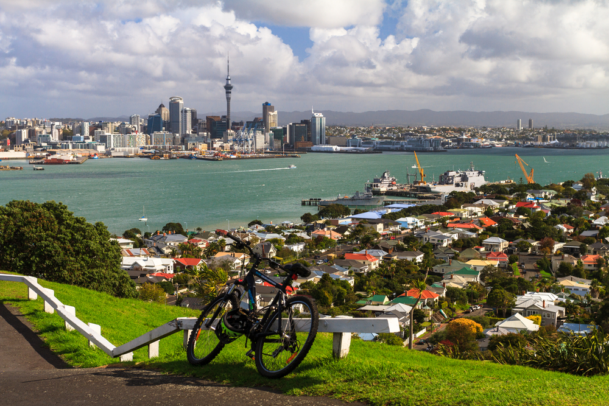
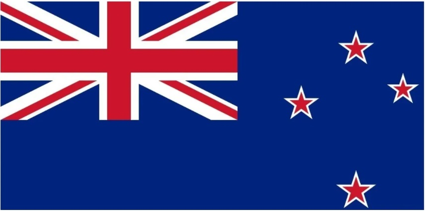

Conheça a Nova Zelândia
A Nova Zelândia é um país desenvolvido localizado na Oceania, continente banhado pelo Oceano Pacífico e caracterizado por grande quantidade de ilhas. Possui características geográficas diversas devido ao seu isolamento e, ainda, as recorrentes atividades vulcânicas e sísmicas que ocorrem no seu território. O país foi colonizado pelos europeus, mas a presença dos maoris, população nativa, ainda é culturalmente muito forte.
 